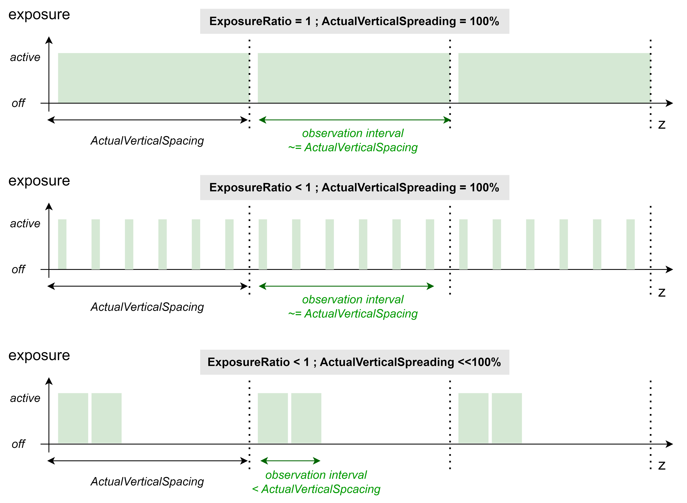

TN_19.3.0.1: Reducing Vibration-Induced WLI Amplitude Loss
Context: Ideal Scanning of Sample-to-Optic Distance
The WLI measurement principle relies on vertical scanning of the distance between the sample and the interferometer optic. Optical interference signals are formed at a signal frequency defined by the vertical scan velocity and the illumination wavelength.
Signal processing in heliInspect gen4 devices detects interference amplitude from these signals at an expected constant detection frequency based on the values of
the ScanSpeed, NominalWavelength, and WavelengthCorrection features.
Ideally, the actual signal frequency is constant and matches the detection frequency.
Challenge: Amplitude Drop due to Velocity Deviations
Variations of the actual signal frequency arise from scanning the distance between the sample and the interferometer optic at non-constant velocity. Deviations from constant velocity are caused by either uneven scan motion or mechanical vibrations of the structure between the sample surface and the heliInspect device.
If the actual signal frequency deviates from the detection frequency, the detected amplitude drops. The signal-to-noise ratio of the detected interference signal is, therefore, reduced. Consequently, the 3D surface data is affected by increased random noise (repeatability) and vertical distortion (inaccuracy).
The following factors determine the quantitative impact of such velocity deviations on the detected amplitude in gen4 heliInspect devices:
relative amount of velocity deviation ((vsample-optic-
ScanSpeed) /ScanSpeed)vertical signal observation interval of a frame (by default, this is close to the value of
ActualVerticalSpacing)
The larger the product of the above two terms, the worse the amplitude drop.
If mechanical vibrations are at the origin of velocity deviations, amplitude loss is observed as a sporadic artifact: For flat horizontal sample surfaces amplitude may drop in the full FOV of random measurement iterations. For samples with larger topographic range, random height intervals (z intervals) might be affected (“dark isolines”).
Fundamentals: Correct Wavelength Setting and Avoidance of Velocity Variations
To avoid systematic mismatch between the actual interference waveform signal frequency and the detection frequency, make sure the value of the EffectiveWavelength feature matches the actual wavelength.
Note
Refer to technical note TN 19.2 (Configuring the Optic Type) for setting EffectiveWavelength using presets.
Note
Refer to the programmer’s guide chapter on wavelength tuning for fine-tuning EffectiveWavelength based on actual measurement data.
The most effective and systematic way of avoiding amplitude drop is avoiding velocity deviations at the potential root cause(s):
Implement a stiff and short mechanical link between the sample and the attachment point of the heliInspect device.
Avoid excitation of mechanical vibrations in the mechanical setup (avoid inducing shocks, or high accelerations. Don’t couple vibrating subsystems to the metrology setup)
If using a third-party vertical scan stage, optimize stage control for constant scan velocity. As a rule of thumb, relative scan velocity deviation should be under 3% (considering a 0Hz to 5kHz band).
Note
External (third party) stages with high-accuracy encoders and programmable encoder output increment can be configured and used as position-based sources of external reference trigger. In that case, the impact of the scanner’s speed deviation is overcome entirely. Impact of sample vibration remains.
Parametric Solution: Increase ScanSpeed and Decrease VerticalSpacing for Improved Robustness
The impact of velocity deviations is reduced by the following choices of parametrization:
Increasing the value of the
ScanSpeedfeature reduces the impact of vibrational velocity deviation.Decreasing the vertical observation interval (i.e decreasing
ActualVerticalSpacing) reduces the impact of any velocity deviation.
This approach is limited by internal operation details of gen4 devices:
A stack of internal frames is recoderd and stored while the device vertically scans through the scan range. One internal frame is recorded and stored each distance increment of ActualVerticalSpacing.
The frame count of the stack is thus equal to ScanRange divided by ActualVerticalSpacing.
The above-described parametric optimization is, hence, subject to the following limits:
The maximum storable internal frame count is limited. Maximum scan range is, therefore, limited to the product of
ActualVerticalSpacing* maximum frame count. Decreasing vertical spacing might shrink the maximum scan range below the application requirements.The internal rate of recording and storing frames is given by
ScanSpeed/ActualVerticalSpacing. This rate is subject to a maximum, too. This criterion limits the approach of simultaneously increasingScanSpeedand decreasingActualVerticalSpacing.
After the scan, gen4 devices process the stack of stored frames for extracting 3D topography. The duration of processing is proportional to the frame count.
As decreasing ActualVerticalSpacing increases the internal frame count, this optimization comes at a cost of measurement latency and, possibly, cycle time.
Extended Parametric Solution: Low VerticalSpreading Enables Very Short Observation Interval
The degree of exposure time spreading is configurable in gen4 devices. The concept refers to chosing whether interference signals are observed and detected continously (fully spread) over the duration of a frame or during a confined shorter interval (less spread). The latter choice enables very short vertical observation interval without entailing the above-mentioned issues of high internal frame rate and high frame count.
The figure below visualizes the implementation of configurable exposure time spreading and the close interaction with exposure time control (usage of the ExposureRatio feature).
By default (when TargetVerticalSpreading = 100%), the exposure time of a frame is spread over the entire frame.
If ExposureRatio = 1.0 the frame’s exposure time is essentially equal to the frame duration, and the vertical observation interval is, hence, equal to the frame spacing (ActualVerticalSpacing).
If ExposureRatio is set to a value lower than 1.0, the frame exposure time is shorter than the frame duration. In that case, the exposure will be pulse with modulated (intermittingly turned on and off several times per frame) with a duty cycle defined by ExposureRatio. However, the observation interval will still be as long as the frame spacing.
By setting TargetVerticalSpreading to a value below 100%, the user reduces the observation interval. As shown below, the observation interval shortening is, internally, achieved by reducing the number of cycles. The device maintains constant overall exposure duration, and hence WLI amplitude, by compensating with a duty cycle increase.
Decreasing TargetVerticalSpreading, therefore, effectively reduces the impact of vibrations and uneven scan motion.
Note
As the visualization hints, the actual degree of exposure spreading applied is subject to some limitations and quantization. The user specifies a target percentage in the TargetVerticalSpacing feature. Reducing TargetVerticalSpreading below ExposureRatio has no additional effect. In that case, ActualVerticalSpreading will be set to the value of 100% * ExposureRatio internally. Further, The vertical observation interval cannot be reduced below the wavelength value. In that case ActualVerticalSpreading will be set to 100% * EffectiveWavelength/ActualVerticalSpacing internally.
Note
Unfortunately, reducing TargetVerticalSpreading might not be a practical solution for high-magnification (20x, 50x) optics. These require low ActualVerticalSpacing and, depending on illumination type and sample reflectance, high ExposureRatio.
{kind=link}

Fig. 7 Exposure diagrams as a function of ActualVerticalSpreading and ExposureRatio (conceptual visualization)
Practical Implementation
As a starting point, use camera parameters that fulfill the prerequisite of matched wavelength setting and provide satisfactory data (while possibly suffering from sporadic velocity mismatch artifacts). Implement the optimization following the sequence below:
Set LightBrightness to a value of 100%.
Increase
TargetVerticalSpacingto a large but reasonable value: E.g. use the presetTargetVerticalSpacingvalue as loaded when setting the OpticType feature to the value representing the optic harware installed. Or even 1.5x this value.(Iteratively) increase
ScanSpeedto the maximum functional value.Iteratively decrease
ExposureRatioto the lowest value providing reasonable amplitude. Stop decreasingExposureRatioat a value of 2% and decreaseLightBrightnessinstead.Set
TargetVerticalSpreadingto a value of 1% for shortest possible observation interval.Validate that amplitude is stable and sufficient over measurement repetitions in the entire FOV.
Note
In presence of significant vibrations, minimizing ActualVerticalSpreading provides best results. In exceptional cases (only moderate vibrations and low sample reflectance) optimum values of TargetVerticalSpreading are anywhere between 0% and 100%.
Document History
Version |
Date |
Changes |
Responsible |
|---|---|---|---|
19.3.0.1 |
25-03-2025 |
initial version |
cl |